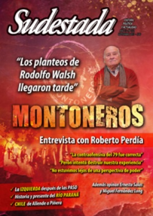

Buscar
"No tuvieron la capacidad de escuchar a Walsh"
Historiador y ex militante montonero, la opinión de Ernesto Salas es una puerta abierta al debate. En réplica a la entrevista con Perdía, expone su mirada sobre la esencia del planteo de Rodolfo Walsh y la respuesta que recibió por parte de la conducción.
Edición N° 122
Septiembre 2013
Revista bimensual
Comprar edición impresaSumario
- "Los planteos de Rodolfo Walsh llegaron tarde"
- "No tuvieron la capacidad de escuchar a Walsh"
- Los explicadores de la derrota
- Censura
- Arqueología del Paraná
- Elecciones en el barrio
- ¿Un nuevo comienzo?
- Chile. 40 años no es nada
- "La canción es nuestro continente"
- El Catatumbo resiste
- El ejemplo de Vietnam
- El periodismo es un bichito avaro
- El proletario del lápiz
- Justicia poética
Compartir Articulo
"Hay que entender las profundas razones de la época, sus contradicciones. En historia siempre tenemos que tener en cuenta las razones y las circunstancias de los protagonistas", aclara en el arranque Ernesto Salas desde una doble condición que le permite opinar con autoridad: como historiador y como militante montonero. Parado en ese lugar, plantea sus observaciones sobre el libro de Roberto Perdía: no a partir de las decisiones asumidas cuarenta años atrás, pero sí en relación con la lectura que se hace de esos mismos hechos cuatro décadas más tarde. La historia también como herramienta que permite ejercitar el pensamiento crítico, la búsqueda de esa raíz que empezó a complejizar las cosas y a provocar errores consecutivos, las discusiones postergadas por una represión que no se detuvo a separar disciplinados de díscolos, el pasado de Montoneros que sigue en construcción permanente.
- Trabajaste el tema de Rodolfo Walsh y sus críticas a la conducción, ¿cuál es tu opinión sobre la mirada de Perdía con respecto a ese tema?
-Me gustaría aclarar lo que dice Perdía: primero, sobre que el pensamiento de Walsh había llegado tarde y segundo, cuando hace una comparación entre el momento en el que escribió el periodista y una serie de reflexiones que Perdía traslada a 1975, cuando en realidad los planteos de Walsh se elevaron en noviembre de 1976. Perdía señala que las cartas de Walsh llegaron "cuando todo ya era tarde". Pero no se entiende por qué no se podía, a fines de 1976, renovar o cambiar la orientación de la organización sabiendo lo que había pasado. Además, reduce todo el planteo que hace Walsh a la cuestión de la descentralización, cuando su aporte fue mucho más amplio: su mirada abarca la crítica al punto de vista ideológico, al político y a la visión que tenía la dirección montonera sobre la realidad. Cuando Perdía refiere que en el mundo de los trabajadores, de los obreros industriales, "la respuesta era otra. Seguían peleando, no estaban en retroceso", está hablando de 1975, no de fines de 1976. Se trata de una forma elemental de desestimar a Walsh.
- ¿Y lo subestima también cuando dice que Walsh no tomó en cuenta para su análisis la situación de la clase obrera y se basó solo en la cuestión territorial?
-Eso es mucho peor todavía. Perdía dice que Walsh tenía una mirada territorialista, que también podría definirse como pequeñoburguesa. De hecho, la conducción después lo cuestionó en un documento en el que definía su posición como "basista". En realidad, lo que dejaban entrever fue que la crítica de Walsh era territorialista, y que la respuesta de la conducción era la viva representación de los intereses de la clase obrera. Primero, es jodido pensar y decir que Walsh -que no se puede defender- no tenía en cuenta a la clase obrera. Segundo, Perdía -y supongo que también Firmenich- coloca a la conducción en una posición en la cual parecían los fieles representantes de la clase obrera en la Argentina. En 1977, en el Congreso de Roma, Firmenich fue nombrado secretario general del Movimiento, comandante en jefe del ejército y presidente del Partido... ¿Por qué ocupaba todos los cargos? Porque según la conducción, Firmenich era el representante -él en sí mismo- de los intereses de la clase obrera en el Movimiento. Esa fue la respuesta a lo que Walsh planteaba sobre las masas, que estaban retrocediendo y que no era hacia los Montoneros sino hacia la identidad conocida. ¿Qué dice Perdía de cuando Walsh los acusó de una lectura berreta, medio vietnamita y medio clausewitziana?: que no atendía a la realidad. Walsh criticaba que Montoneros estuviera desconectado del pueblo peronista, y ellos en cierto modo admitían esa desconexión. Pero después tomaron decisiones que se sustentaron siempre en la idea de volver a la ofensiva. ¿En qué sentido se analiza lo que sucedió para decir que existía una paridad de fuerzas o una leve hegemonía del campo del pueblo como para lanzar una contraofensiva militar? Son cuestiones que Perdía no responde. El planteo de Walsh era mucho más profundo.
Por otro lado, con respecto a la confusión que generaron en Montoneros y en otros sectores las huelgas de 1975, la verdad es que la organización no puso toda la carne en las coordinadoras regionales. Puso los huevos en distintas canastas: en el Partido Auténtico, en la militarización de la JP, en diversas políticas que fueron desarrollándose en ese momento. En julio de 1975, la clase obrera peronista le hizo el primer paro de toda su historia a un gobierno peronista; y sobre ese episodio Montoneros interpretó que los trabajadores se estaban independizando de su identidad y que, por ese motivo y en ese avance sostenido hacia la revolución o hacia la lucha política de masas, encontrarían en Montoneros su nueva identidad. Eso es lo que Walsh criticaba cuando escribió: "Las masas no se repliegan hacia el vacío, sino al terreno malo pero conocido, hacia relaciones que dominan, hacia prácticas comunes, en definitiva hacia su propia historia, su propia cultura y su propia psicología, o sea los componentes de su identidad social y política. Suponer, como a veces hacemos, que las masas pueden replegarse hacia el montonerismo, es negar la esencia del repliegue, que consiste en desplazarse de posiciones más expuestas hacia posiciones menos expuestas; y es merecer el calificativo de idealismo que a veces no aplican hombres del pueblo".
Y esa definición es central. Ahora, qué hizo la conducción con los papeles de Walsh: elaborar un documento donde cuestionó a los "militaristas" y a los "movimientistas" desde una supuesta posición equidistante entre las dos posturas, que estarían identificadas con la Columna Norte una y con Walsh la otra. Decidió organizar un partido marxista-leninista, un partido de cuadros, previendo que no iba a ser el tiempo de las masas, sino el de los militantes encuadrados y convencidos de una lucha frontal, peligrosa y armada. Entonces, hay una pregunta obligada a Perdía: ¿Esa era la herramienta adecuada para encarar lo que se venía? Porque lo que hacía era aislarlos de las masas. Es decir, desestimar a los compañeros que estaban en relación directa con los territorios, dejarlos solos y proteger el núcleo combatiente con la idea de que se iba a preparar una contraofensiva. Nunca se pensó un reflujo, siempre la idea fue la retirada táctica para preparar la contraofensiva estratégica. Me pareció brillante lo de Pilar Calveiro, cuando dijo que en 1975 el problema no fue sólo la clandestinidad, sino la militarización de los cuadros no combatientes: la idea de formar un gran ejército con 5 o 7 mil combatientes que provenían de las filas de la JP, que no fue otra cosa que el abandono de la actividad política por la especialización logística y militar de esos cuadros.
Ahí está verdaderamente el problema: se priorizaron los aspectos milicianos de los militantes y no su relación con los barrios, algo que terminó siendo un gravísimo error porque se perdió el contacto con las masas. Porque política se puede hacer siempre: con el vecino, con un amigo, sentarse a tomar mate para convencerlos de que en la realidad hay que hacer las cosas de tal manera o discutir sobre lo que va a pasar. Pero el problema en 1975 fue que se le llamó "retirada" al repliegue de los frentes en lo político y "ofensiva táctica" a lo militar. Entonces, pregunta Calveiro: "¿De dónde nos estábamos retirando?". La respuesta es que nos estábamos retirando de la política.
(La nota completa en Sudestada Nº 122, agosto de 2013)
Comentarios
Hugo Montero
Articulos más vistos


LIBRERÍA SUDESTADA

Colección infantil

Distribuidora de Libros

Suscripción

Sudestada en URUGUAY

Otros articulos de esta edición
"Los planteos de Rodolfo Walsh llegaron tarde"
Fue el número dos de Montoneros. Desde ese lugar, hoy responde por un pasado de conflicto violento, de debate abierto ...
Arqueología del Paraná
Casi cinco mil personas fueron evacuadas en las provincias de Misiones, Chaco y Corrientes como consecuencia de la crecida del ...
 Los cuadernos de Francisco Art Lissa
Los cuadernos de Francisco Art Lissa
Justicia poética
Francisco Art Lissa fue estrangulado el 21 de marzo de 2007, a los 23 años. Previamente, sus homicidas lo habían ...
El proletario del lápiz
Amalia Yemelli tomó la taza de mate cosido, se limpió el delantal y quedó inmóvil viendo el sol por la ...
 Adelanto: Guerra del pueblo, ejército del pueblo
Adelanto: Guerra del pueblo, ejército del pueblo
El ejemplo de Vietnam
El militar vietnamita Vo Nguyen Giap escribió algunas de las páginas más leídas por la militancia argentina en la década ...
Chile. 40 años no es nada
Un recorrido por el Chile rebelde. Desde el derrocamiento de Salvador Allende hasta las luchas actuales de pueblos originarios, estudiantes ...